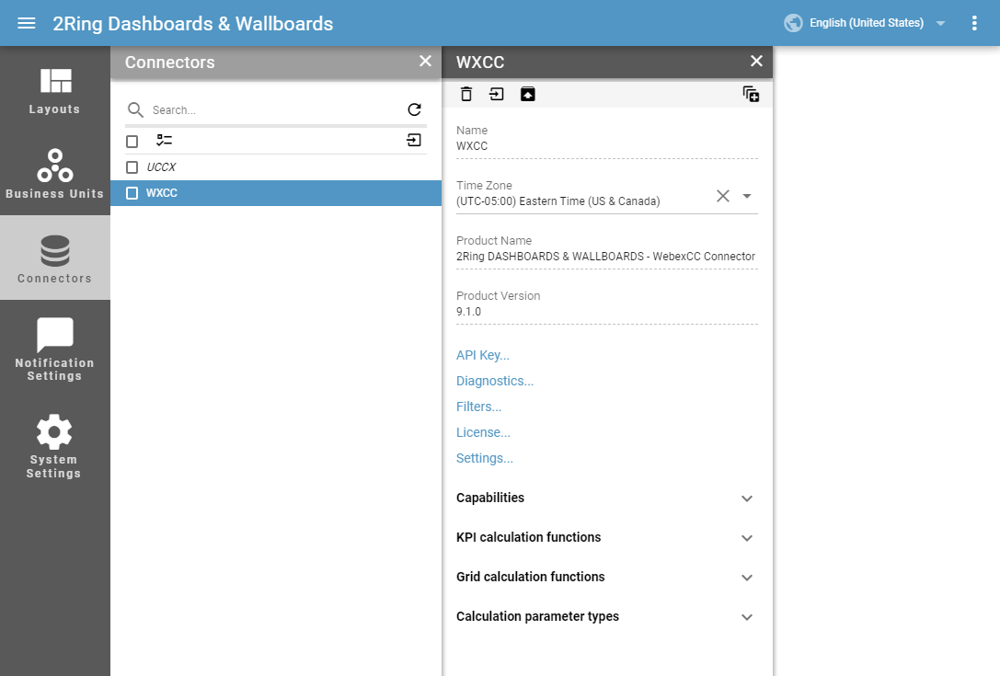

Connectors¶
Connector is responsible for collection and processing of data from source systems.
- Name
Required
The name of the Connector instance.
- Time zone
This setting lets user set a time zone, which is necessary for the proper functioning of some connectors.
- Product Name
The name of connector type.
- Product Version
The version of the Connector instance.
- Api Key
Key, used for authentication of API based connectors.
System connector can not be deleted or edited. Only upload of license and generation of api key is allowed.